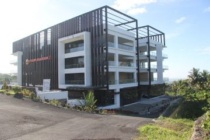

Program Studi Ilmu Komunikasi PSDKU Pangandaran

Program studi Ilmu Komunikasi merupakan salah satu program studi unggulan di Fakultas Ilmu Komunikasi dan banyak diminati di Universitas Padjadjaran. Adanya penghargaan sebagai “Best School of Communication” dari Majalah Mix Marketing untuk Fikom Unpad menjadi bukti bahwa program studi Ilmu Komunikasi terus berkomitmen untuk memperhatikan penjaminan mutu.
Program studi Ilmu Komunikasi memiliki misi menghasilkan lulusan dengan profil sebagai Komunikolog Profesional, Perencana Program Komunikasi, dan Pengembang Media Kreatif. Dalam rangka mewujudkan misi tersebut, prodi ini menerapkan Kurikulum Pendidikan Tinggi (KPT) berbasis Riset yang telah disesuaikan dengan perkembangan keilmuan komunikasi serta memperhatikan kebutuhan industri profesional.
Proses belajar mengajar yang diterapkan pada prodi Ilmu Komunikasi mendorong mahasiswa bukan hanya belajar dari buku dan jurnal referensi saja. Mahasiswa dilibatkan dalam proses pembelajaran aktif pada konteks kehidupan sosial masyarakat. Hal ini bertujuan agar mahasiswa dapat berpikir kreatif, inovatif, dan solutif.
Akreditasi : Baik
Website : http://ilkom.psdku.unpad.ac.id
Tahun 2026 menjadi penyelenggara dan pengelola program pendidikan Sarjana Ilmu Komunikasi yang berkualitas
dan memiliki keunggulan kompetitif (center of excellence) di tingkat nasional dan diakui di tingkat regional, dan
internasional
- 1. Menyelenggarakan pendidikan Ilmu Komunikasi jenjang sarjana yang mampu mengembangkan keilmuan
komunikasi menuju center of excellence serta memenuhi kebutuhan industri profesional dan tuntutan
masyarakat (stakeholders) dengan prinsip partnership, respect, innovation, diversity, and equality
- 2. Menyelenggarakan riset dan pengabdian kepada masyarakat guna menopang pendidikan serta kemajuan
ilmu pengetahuan dan teknologi menuju center of excellence bagi komunitas akademik, pemerintah,
industri, dan masyarakat pada umumnya
- 3. Menghasilkan insan akademik jenjang sarjana yang menjunjung tinggi etika komunikasi serta keluhuran
budaya lokal dan budaya nasional menuju center of excellence
- 4. Menyelenggarakan tata kelola lembaga pendidikan tinggi tingkatsarjana yang professional dan akuntabel
dengan menerapkan prinsip penjaminan mutu menuju center of excellence serta sistem manajemen
organisasi program studi yang profesional, transparan, dan akuntabel dalam keragaman budaya dunia
- 5. Menjalin hubungan kerja sama strategis dengan masyarakat, pemerintah, dunia industri, dan institusi
pendidikan lain, secara berkelanjutan dengan menerapkan prinsip partnership, respect, innovation, diversity,
and equality
- 1. Menghasilkan lulusan yang memiliki kemampuan sebagai perencana strategis (strategic planner) di industri
komunikasi pemasaran dan pariwisata pada khususnya dan industri komunikasi bidang lain pada
umumnya
- 2. Menghasilkan lulusan yang memiliki kemampuan sebagai pengembang media kreatif (creative media
developer); pengembang berbagai bentuk konsep isi dan produk media kreatif, baik berbasis printing,
broadcasting, digital, multimedia, dan lain-lain
- 3. Menghasilkan lulusan yang memiliki kemampuan sebagai sebagai wirausaha komunikasi (communication
enterperneur) di industri pariwisata dan industri kreatif
- 1. Memiliki karir sebagai perencana strategis (strategic planner) di industri komunikasi pemasaran dan
pariwisata pada khususnya dan industri komunikasi bidang lain pada umumnya
- 2. Memiliki karir sebagai pengembang media kreatif (creative media developer); pengembang berbagai bentuk
konsep isi dan produk media kreatif, baik berbasis printing, broadcasting, digital, multimedia, dan lain-lain
- 3. Memiliki karir sebagai wirausaha komunikasi (communication enterperneur) di industri pariwisata dan industri
kreatif
Program Studi Di Luar Kampus Utama (PSDKU) berlokasi di Kabupaten Pangandaran, Jawa Barat